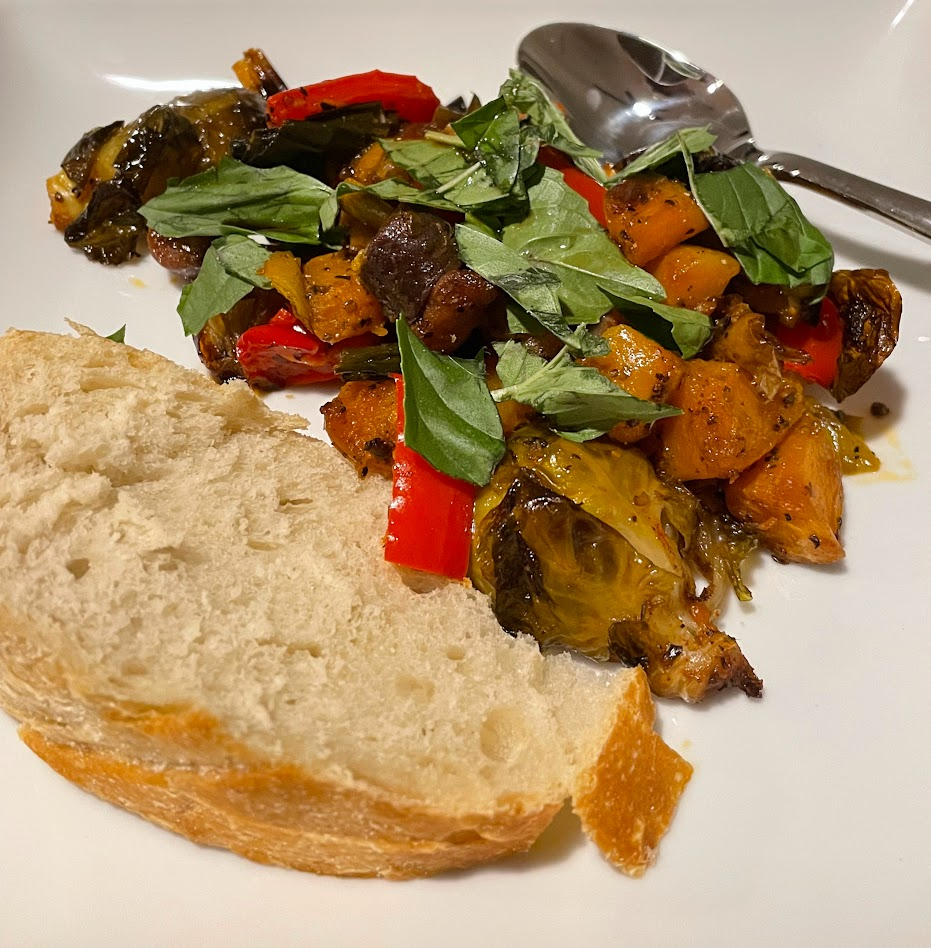

Roasted squash and veggies and gnocchi

Served with basil garnish and a side of bread
Ingredients
- Butternut squash (cubed, with or without peel)
- Brussel sprouts (halved)
- Leeks (thoroughly cleaned and sliced)
- Rainbow carrots
- Turnip or rutabaga (optional)
- Garlic (whole, crushed, peeled cloves)
- Onion
- Olive oil (enough to coat everything)
- Salt
- Pepper
- Chili powder
- Smoked paprika
- Italian seasoning
- Gnocchi
- Red bell pepper
- Chopped walnuts (optional)
- Fresh thyme (or just use more dry Italian seasoning)
- Basil
- Balsamic vinegar
Instructions
Mix everything except the last 6 ingredients in a baking sheet, then stir until everything has olive oil on it. Bake at 400 Fahrenheit for around half an hour, then take it out, stir again, and mix in the gnocchi, bell pepper, and walnuts. Bake for another 45 minutes or so, and stir once or twice during that time. Take it out of the oven once all the vegetables are soft and starting to char, and the gnocchi is getting crisp. Mix in chopped basil.
Serving suggestion
Add extra basil on top as a garnish. Right before eating, splash in a bit of balsamic vinegar. Do not add in the vinegar any earlier or it will "digest" your food.
Notes
Lots of these ingredients have the same season. Ideally make this dish around October.